[竹北] 好旬日食
| 餐廳名稱: | 好旬日食 |
|---|---|
| 地 址: | 新竹縣竹北市文興路一段253號 |
| 營業時間: | 平日 11:00~15:00 17:00~22:00 |
| 假日 10:30~15:30 17:00~22:00 |
某週日的中午，一如往常的拖拖拖，接近下午兩點了，大部分的 餐廳的午餐時段要結束了，這個時候，找到一家斑馬集團的餐廳 - 好旬日食， 資料上是寫營業到下午三點，平時對斑馬餐廳的印象是不錯，那就 來踩雷了。
好旬日食的門口，下午兩點到，前面竟然還有一組客人在等，怪了，是有那麼熱門嗎。 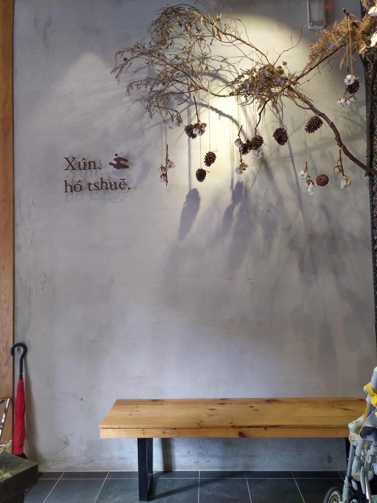
不愧是斑馬集團的餐廳，服務生雖然忙，但服務態度還是很好。 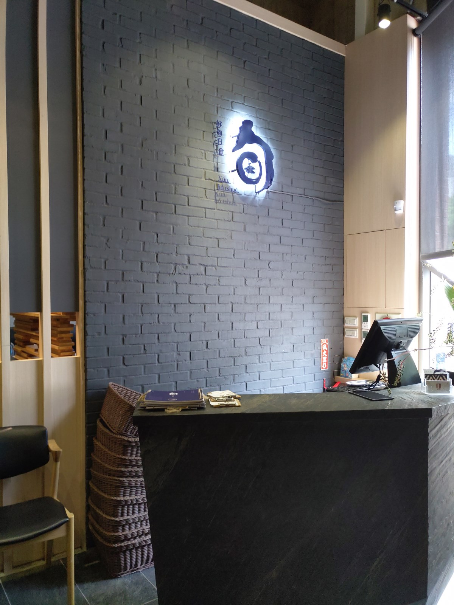
等的時候，可以先看菜單，先點菜。 不過回家看了他的Facebook粉絲頁， 那邊還有拍得很整齊，高解析度的菜單，各位讀者還是去那邊看吧。 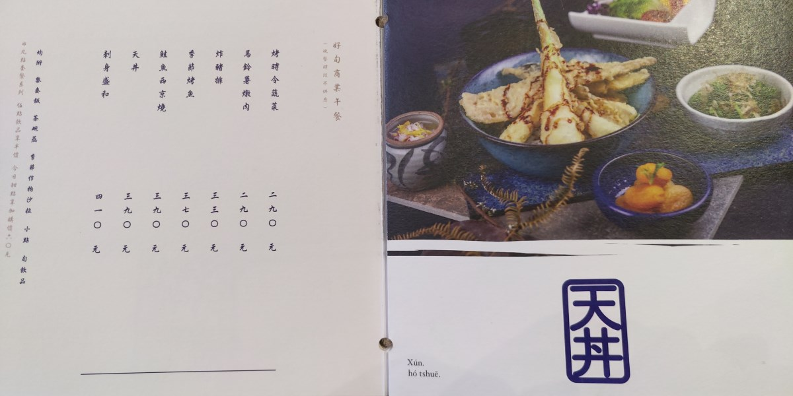 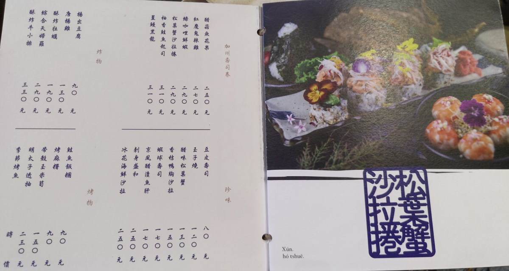 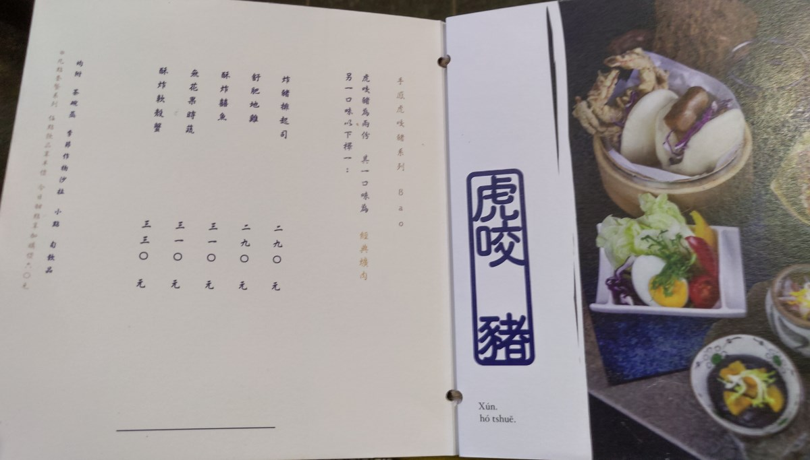 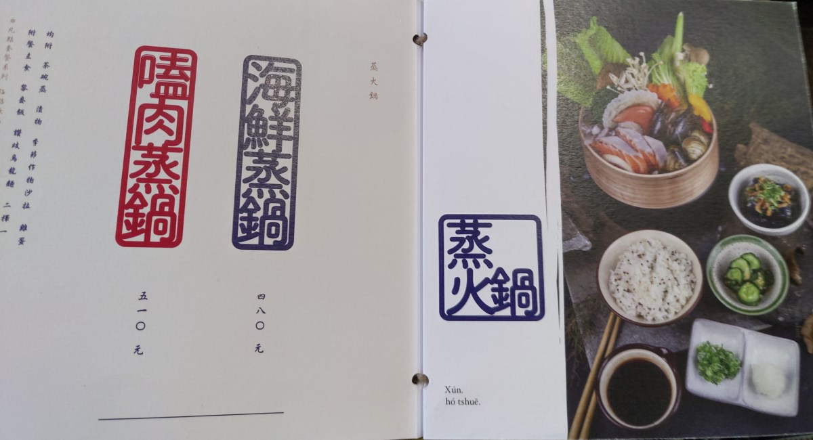 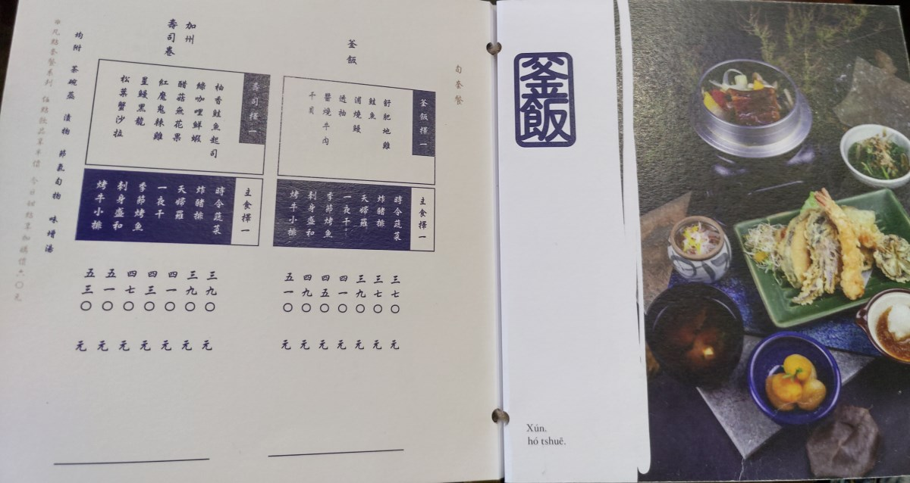 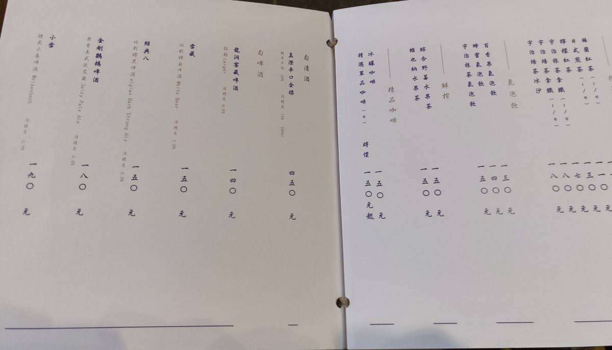
一坐下來，先送上一小杯飲料，今天是黑木耳露。 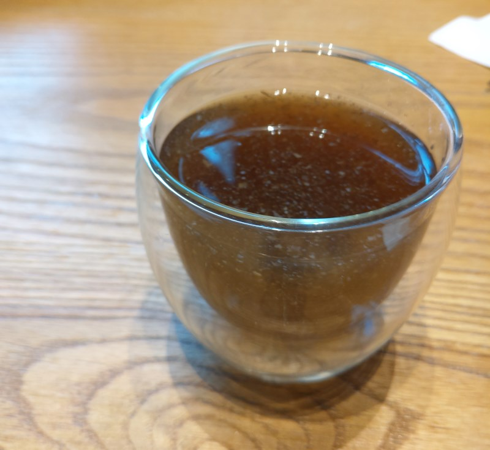
這個海帶小菜調味的不錯，而且可以續。 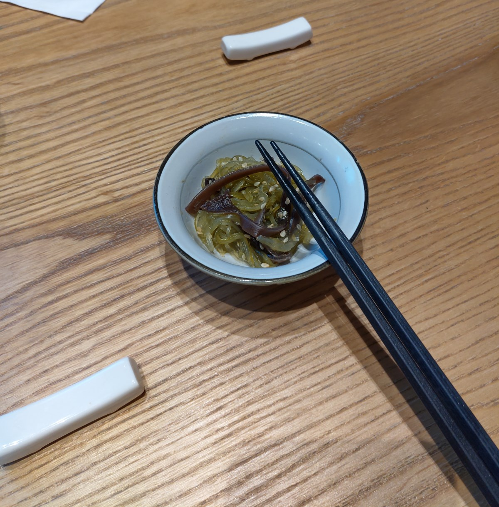
加州捲壽司套餐。 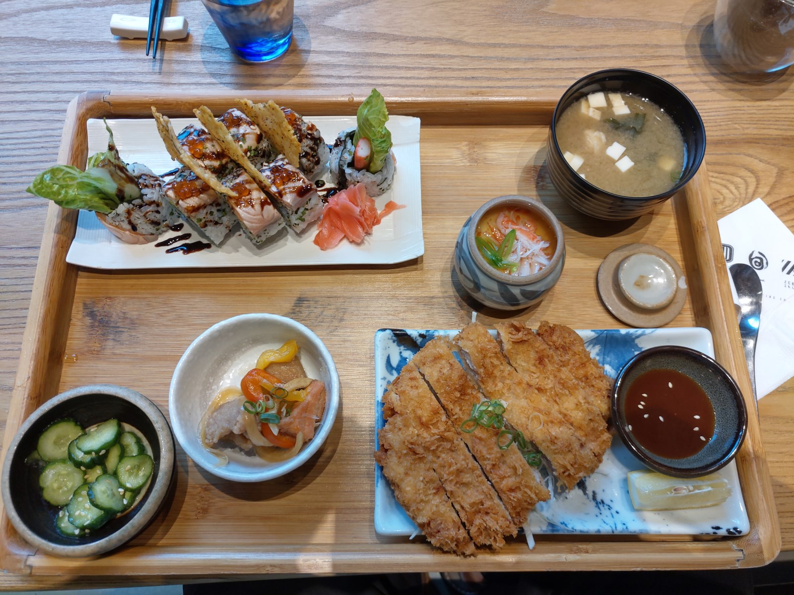
虎咬豬套餐。 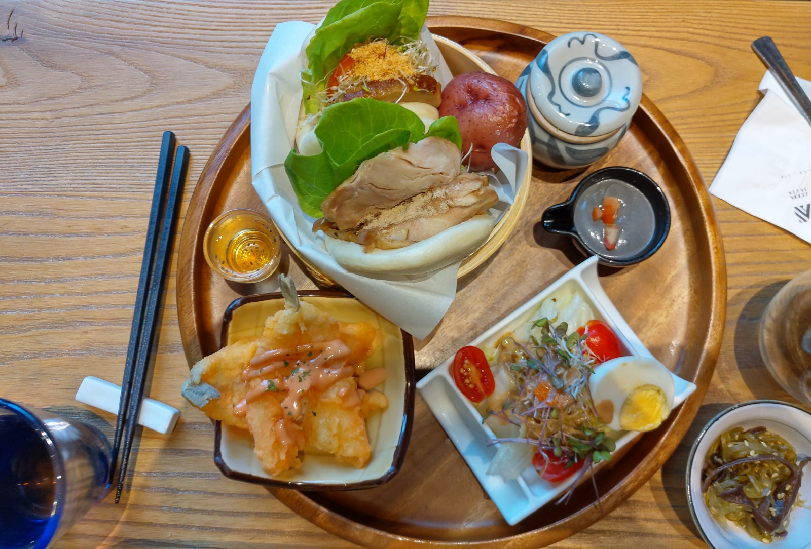
單點的 蝦球壽司。 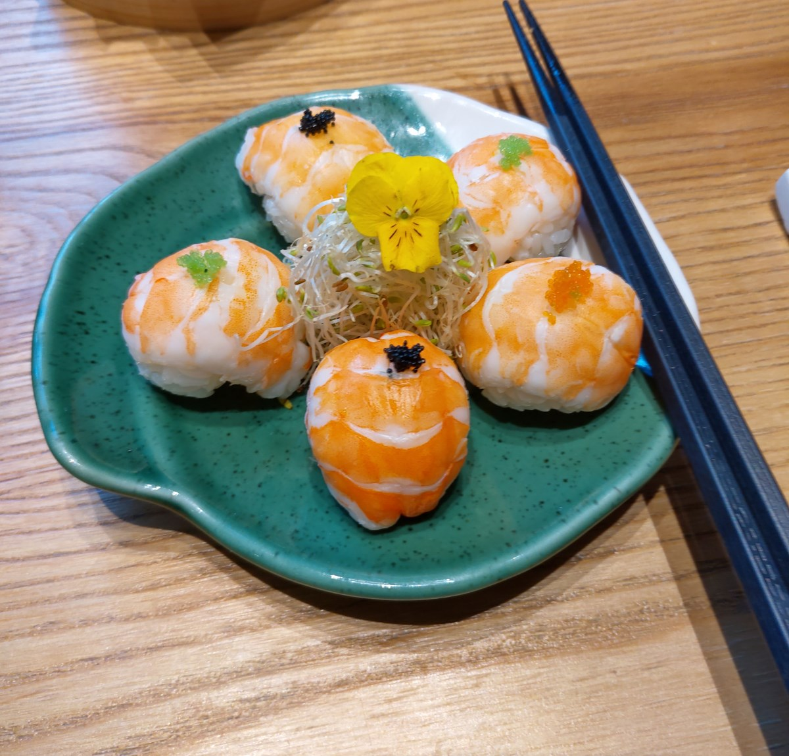
每道菜的口味都很正常，中上，算是符合這個價格。 順路的話，可再來品嘗。
其實用餐時，仍然是客滿狀態，難免有兩三桌很高興的聊天， 可是牆壁是水泥，整個是密閉空間，感覺聲音撞來撞去嗡嗡叫， 很不舒服，如果有那種能減緩聲音的海綿、壁紙貼在牆上的話， 應該會改善很多。 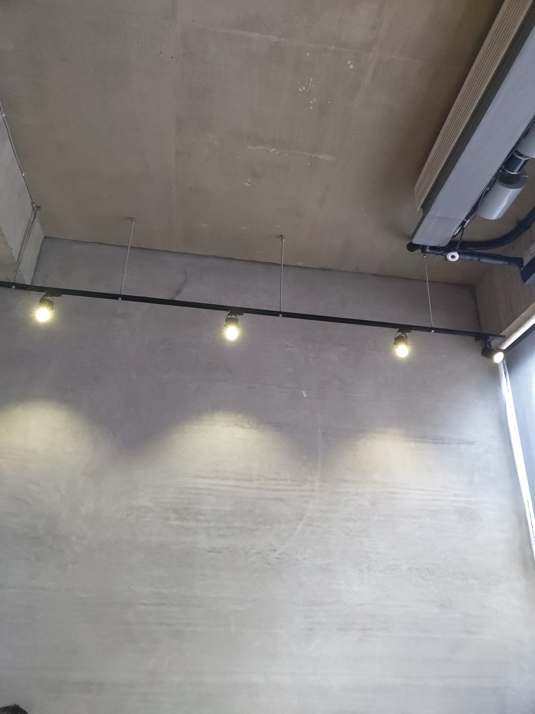
這家店，有符合斑馬餐飲集團的水準，不排斥再來用餐。